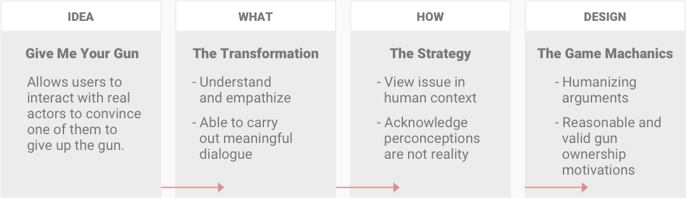
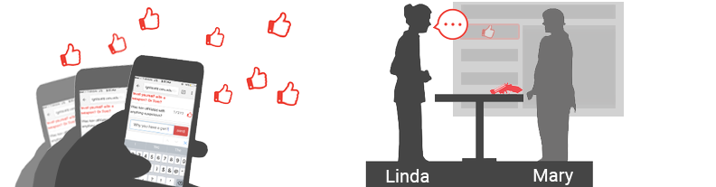
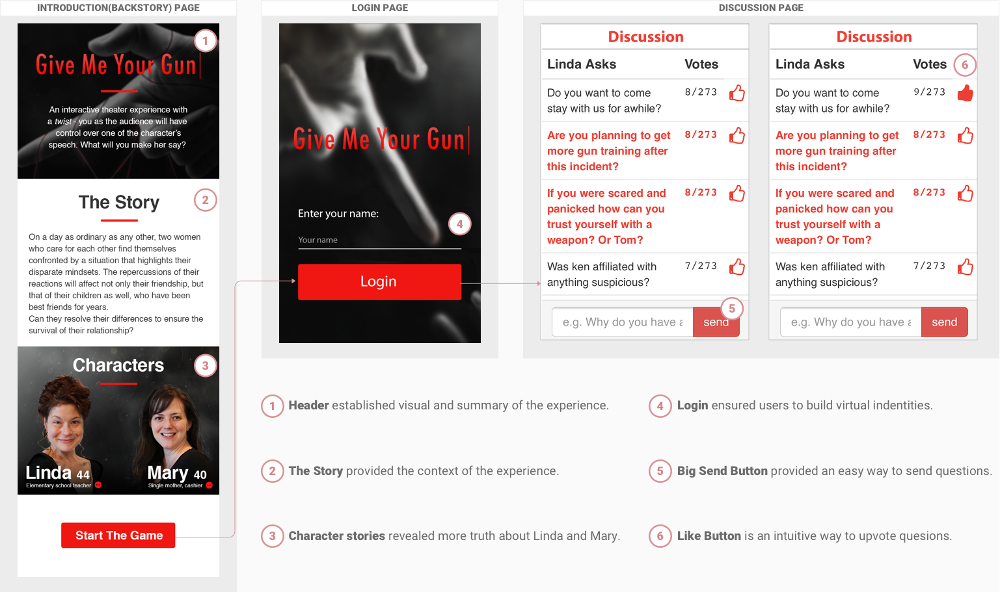
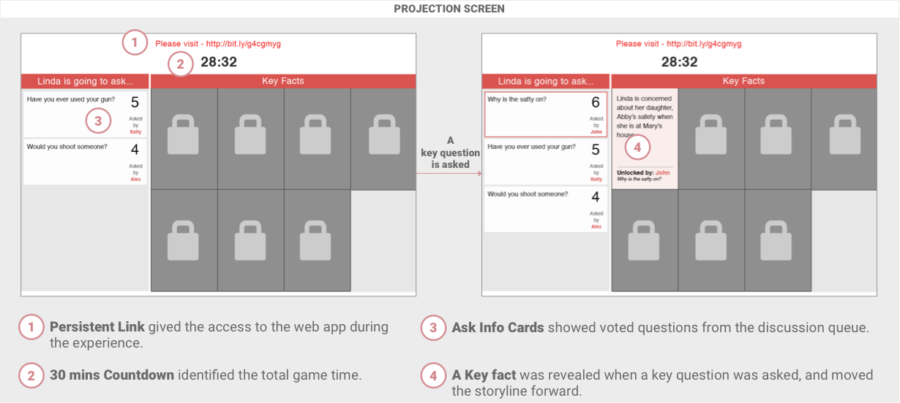
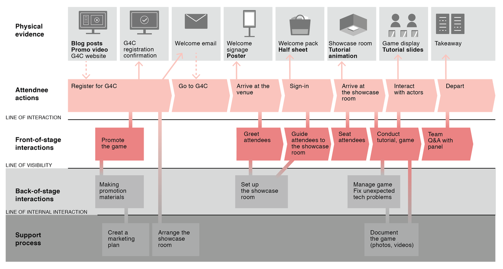

Context
Give Me Your Gun is a mobile interactive theater experience which deals with the controversial topic of gun violence in the U.S. It ran at the Games for Change Festival (G4C) 2016 in New York City, to a crowd of more than 200 people.
Coverage: Kill Screen: American politics and the importance of participation
30 seconds trailer
Full experience at the Games for Change Festival
The Challenge
Build a Transformational experience addressing gun violence
The goal of this project was to define, design, develop and execute a live game experience for the June 2016 G4C Festival in New York City. We were tasked with defining the design and physical elements of a live game to run during the Festival. The game needed to consider the following criteria:
Ideation
What? How? Design?
On a high level, we sought to create an experience that empowered people with understanding and empathy of others' beliefs. We wanted to leverage this to cultivate meaningful conversation around the issue of Gun Violence in the U.S.
- What: Is the transformation really valuable?
- How: Does the strategy execute the transformation?
- Design: Does the design lead to the the strategy?
Experience Summary
Give me your gun is an interactive experience which allows players to interact with real actors under certain rules. Their goals are to help Linda(the character players can directly influence) convince Mary (the character players cannot reach directly) to give up her gun.
Give Me Your Gun idea evaluation process.
Core Gameplay
Players “control” Linda by feeding her questions or statements through a web application. Through the application players can raise their own questions or vote for other’s questions they think is reasonable and helpful. The most suitable statements are projected on the screen then voiced by Linda and Mary responds to players’ comments or questions.
Audiences control conversations that are happening on stage, and the projection screen, between two actors.
User Interface & Flow
Phone
- Dynamic Voting System Dynamic voting mechanism gives audiences sense of playing in a large group, and shows the continuous message stream.
- Key Fact Unlocked When an fact was unlocked, a popup window directs audience's attention to the stage in order to increase engagement.
Dynamic Voting System
Key Fact Unlocked
Projection Screen
The lively color overlay animation shows when the audience has unlocked a key fact that contains important story information.

Playtests
We conducted many playtests to evaluate UI, story, and gameplay.

Service Blueprint
In order to deliver our project to the G4C festival, we promoted the game, installed it in the space, and gave gameplay instructions during the showcase itself. To help our audience understand the gameplay, we used a detailed visualisation of how the actions and processes between the audience and the game affected the experience.
Marketing Material and Gameplay Introduction
I created game card, poster, tutorial animation and slides to demo the gameplay.
Game card
Game poster
Game introduction animation
Gameplay intro 1
Gameplay intro 2
Gameplay intro 3
Result
"I would love to see this on Broadway!"
"I’m not a gun supporter, but after playing your game, I think some people should be allowed to keep their guns."
We designed this theater game with the aim of transforming our audience beyond their experience playing. Impacting players' emotions as they directed the actors onstage served as our emotional goal, all while we tried to build up their understanding and mastery of the specific mechanics of the performance.